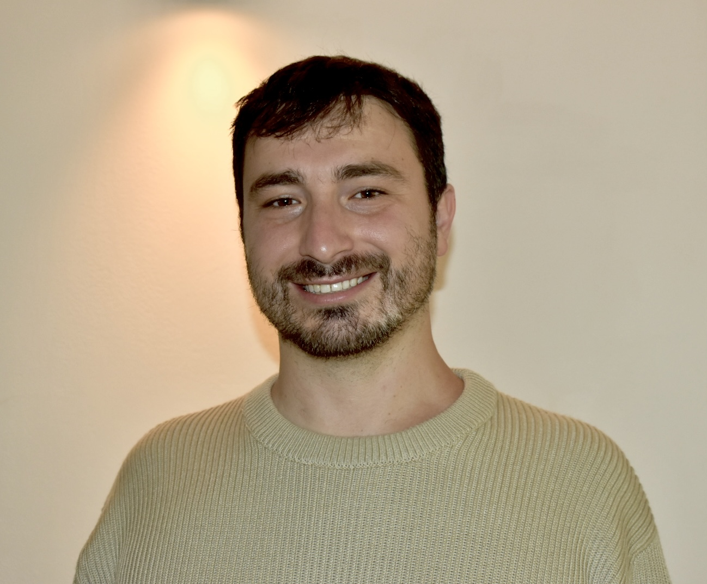

Jonathan Karin

I am a PhD student at the Mor Nitzan Lab at the School of Computer Science & Engineering at The Hebrew University of Jerusalem. Before joining the lab, I worked at Intel Corporation as a hardware designer. I completed my B.Sc. in Computer Engineering at Ben-Gurion University and my M.Sc. in Computer Science at The Hebrew University of Jerusalem. My research focuses on computational biology and graph signal processing, with a particular emphasis on linking topology to function in biological processes using advanced computational methods and mathematical modeling.
 Email
Email
 Scholar
Scholar
 LinkedIn
LinkedIn
Research Interests
Computational Biology
Graph Signal Processing
Graph Machine Learning
Complex Biological Systems
Publications
Nature Computational Science
2024
scPrisma infers, filters and enhances topological signals in single-cell data using spectral template matching
Code
Nature Biotechnology
2023
Enhancing swarms' durability to threats via graph signal processing and graph-neural-network-based generative modeling
Code
Phys. Rev. E
2025
Proceedings of the 12th ACM International Conference on Bioinformatics, Computational Biology, and Health Informatics
2021
Nature Computational Science
2024